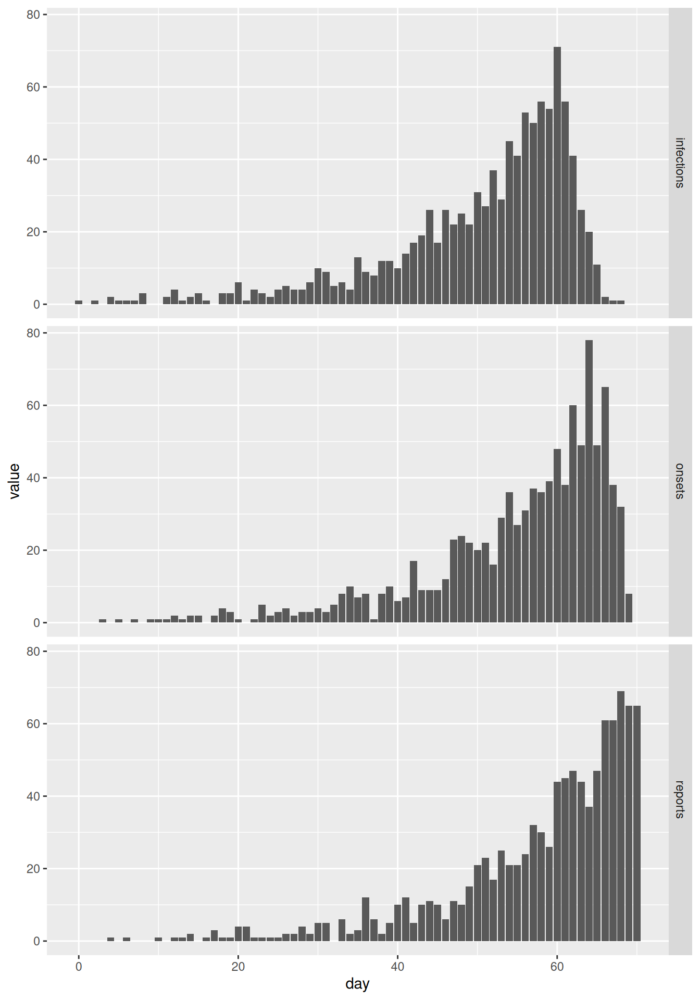
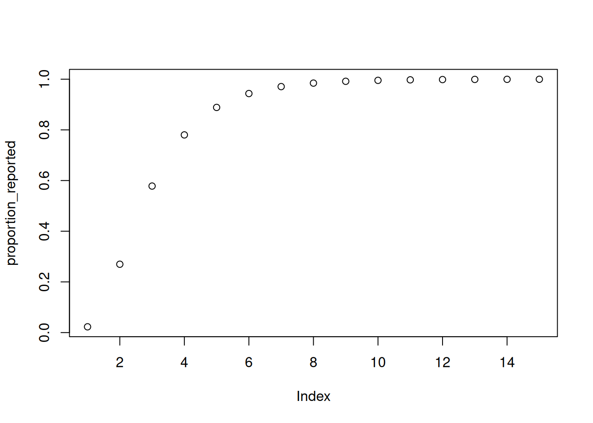
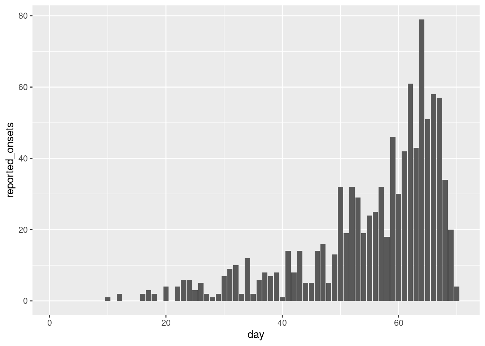
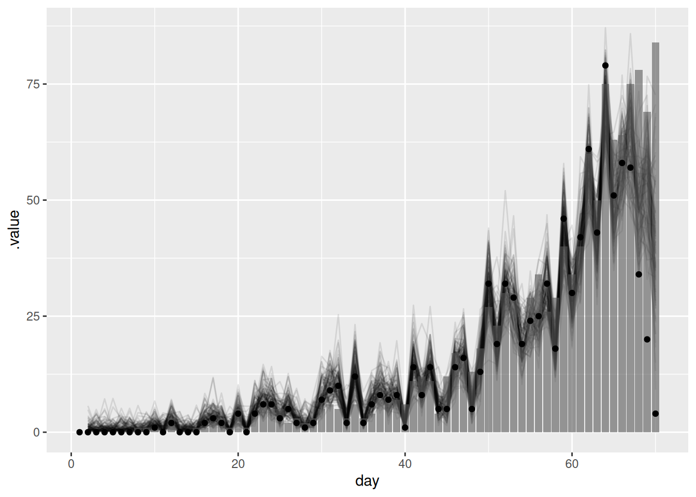
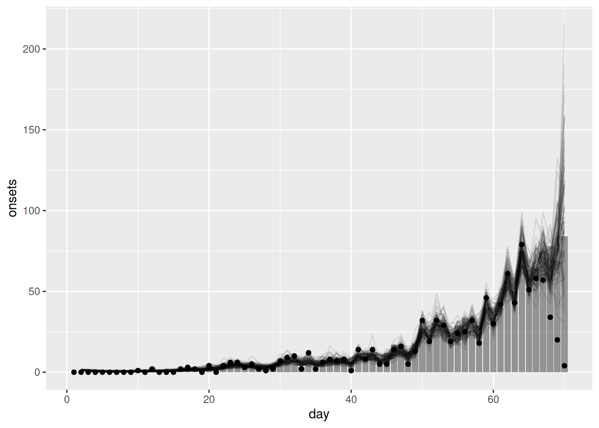
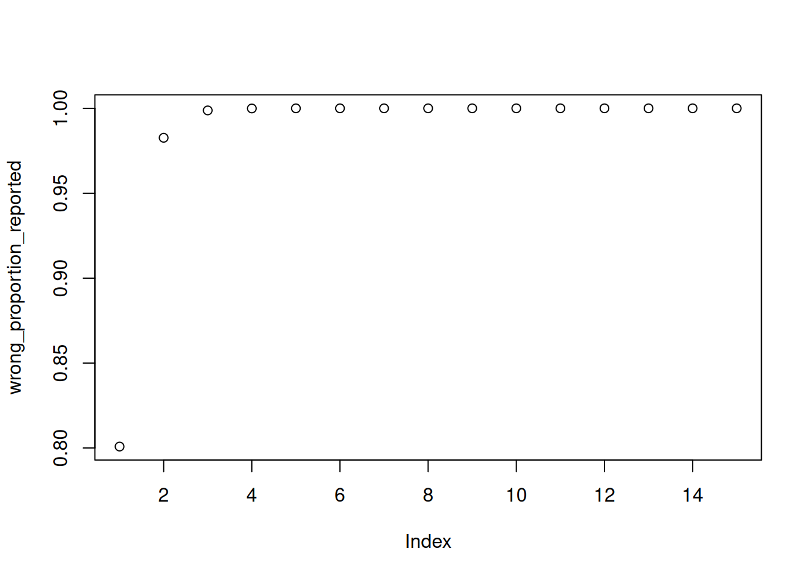
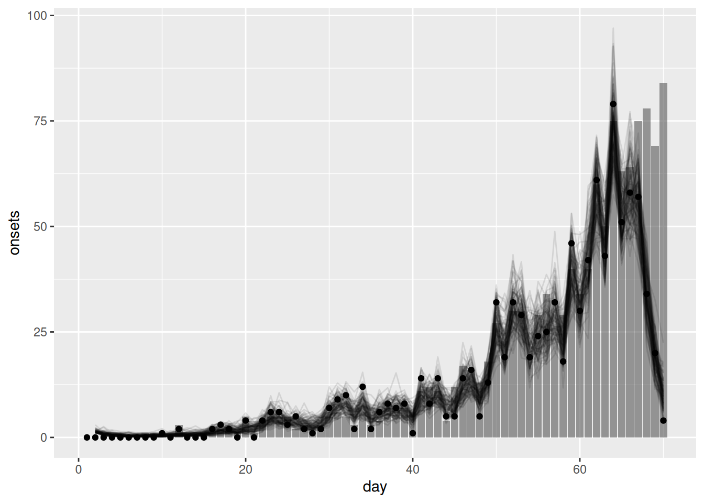

library("nfidd")
library("dplyr")
library("tidyr")
library("ggplot2")
library("tidybayes")Nowcasting concepts
Introduction
So far we’ve explored the delays and biases of real-time infectious disease surveillance data, started to correct for these, and considered the underlying process that drives the evolution of epidemics (looking at the reproduction number and renewal equation). Next, we’ll focus on predicting new information about how infectious disease transmission is evolving in the present and future.
We know that we have incomplete information in the present because of delays in the observation process (reporting delays). The aim of nowcasting is to predict what an epidemiological time series will look like after all delayed reports are in, for which we need to account for the delays and biases we’ve already considered.
Slides
Objectives
This session aims to introduce the concept of nowcasting, and see how we can perform a nowcast if we know the underlying delay distribution.
NoteSetup
Source file
The source file of this session is located at sessions/nowcasting.qmd.
Libraries used
In this session we will use the nfidd package to load a data set of infection times and access stan models and helper functions, the dplyr and tidyr packages for data wrangling, ggplot2 library for plotting, and the tidybayes package for extracting results of the inference.
Tip
The best way to interact with the material is via the Visual Editor of RStudio.
Initialisation
We set a random seed for reproducibility. Setting this ensures that you should get exactly the same results on your computer as we do. We also set an option that makes cmdstanr show line numbers when printing model code. This is not strictly necessary but will help us talk about the models.
set.seed(123)
options(cmdstanr_print_line_numbers = TRUE)Simulating delayed reporting
Epidemiological data is not usually available immediately for analysis. Instead, data usually gets collated at different levels of a healthcare or health surveillance system, cleaned, checked before being aggregated and/or anonymised and ultimately shared with an analyst. We call the reporting time the time a data point (e.g. a time or day of symptom onset or a time or day of hospitalisation) has entered the data set used for some analysis. Similar to the data discussed in the preceding session, this time is often only available as a date, i.e. censored at the scale of a day.
We can simulate this reporting process. Let us assume that the symptom onsets are reported with a delay and that this delay is characterised by a lognormal distribution with meanlog 1 and sdlog 0.5: To do so, we perform a very similar simulation to what we did in the session on delay distributions, except now we don’t simulate hospitalisations but reports of symptom onsets:
data(infection_times)
df <- infection_times |>
mutate(
onset_time = infection_time + rgamma(n(), shape = 5, rate = 1),
report_time = onset_time + rlnorm(n(), meanlog = 1, sdlog = 0.5)
)We then assume that we’re 70 days into the outbreak, i.e. we only consider observations with a reporting time less than 71 - other symptom onset may have already happened, but we have not observed them yet.
cutoff <- 71
df_co <- df |>
filter(report_time < cutoff)We can now convert this to a time series of symptom onsets and reports:
## create time series of infections, onsets, and reports
df_co <- df_co |>
mutate(
infection_day = floor(infection_time),
onset_day = floor(onset_time),
report_day = floor(report_time)
) |>
select(-infection_time, -onset_time, -report_time)
onset_ts <- df_co |>
count(day = onset_day, name = "onsets")
reports_ts <- df_co |>
count(day = report_day, name = "reports")
all_days <- expand_grid(day = seq(0, cutoff - 1)) |>
full_join(onset_ts, by = "day") |>
full_join(reports_ts, by = "day") |>
replace_na(list(onsets = 0, reports = 0))Plotting these, we get
combined <- all_days |>
pivot_longer(c(onsets, reports), names_to = "variable")
ggplot(combined, aes(x = day, y = value)) +
facet_grid(variable ~ .) +
geom_col()
Looking at the two plots in isolation we would conclude very different things about the epidemic: symptom onsets seem to have flattened off and perhaps are going down, whereas reports are increasing rapidly.
This apparent contradiction appears because onsets are reported with a delay. By cutting off at a certain reporting date, we do not observe many of the recent symptom onsets that are yet to be be reported. We can see that if we plot the final data set of symptom onsets alongside the cut-off one:
# Use full outbreak dataset
final <- df |>
mutate(onset_day = floor(onset_time)) |>
select(-onset_time)
final_onset_ts <- final |>
count(day = onset_day, name = "onsets")
final_all_days <- expand_grid(day = seq(0, max(final_onset_ts$day))) |>
full_join(final_onset_ts, by = "day") |>
replace_na(list(onsets = 0)) |>
mutate(cutoff = "final")
intermediate <- combined |>
filter(variable == "onsets") |>
select(-variable) |>
rename(onsets = value) |>
mutate(cutoff = "70 days")
combined_cutoffs <- rbind(
intermediate,
final_all_days
)
ggplot(combined_cutoffs, aes(x = day, y = onsets, colour = cutoff)) +
geom_line() +
scale_colour_brewer(palette = "Dark2") +
geom_vline(xintercept = cutoff, linetype = "dashed")
As we can see, even though it may much seem like the epidemic curve is going down, in fact in the final data set one can see that at the time symptom onsets were still increasing. The apparent decline towards the present (indicated by a dashed vertical line) was caused by the delay in reporting.
NotePlotting and analysing data by report date
Looking at the plots one might suggest plotting and analysing the data by date of reporting which correctly showed the data to be still increasing and which should, by definition, not be subject to future changes.
This can sometimes be a sensible way to visualise the data. However, reporting might itself be subject to biases such as breaks during the weekend, holidays etc or reporting delays may vary over time. At the same time, when it comes to capacity or intervention planning we may need to know how many people e.g. become sick on any given day and will thus present to the healthcare system rather than how many will be reported.
Tip
Estimating the “true curve” (i.e. what we expect to see once the data are complete at a future date) of the time series of epidemiologically relevant events from a potentially truncated epidemiological curve and information about the delays is what is usually called “nowcasting”.
Nowcasting with a known delay
The simplest possible nowcasting model
Here we assume that the delay distribution is known and that we can use it to nowcast the most recent data. In practice, the delay distribution is often not known and needs to be estimated from the data. We could do this using methods from the session on biases in delay distributions.
In the session on convolutions we used delay distributions convolved with the infection times to estimate the time series of symptom onsets. A simple way to nowcast is to use the same approach but using the cumulative distribution function of the delay distribution rather than the probability density function and only apply it to the most recent data as this is the only data that can be subject to change (due to delays in reporting).
We will build intuition for this as usual using simulation. First we define the proportion reported using a delay distribution up to 15 days, again using a lognormal distribution with meanlog 1 and sdlog 0.5:
proportion_reported <- plnorm(1:15, 1, 0.5)
plot(proportion_reported)
TipThe
plnorm function
The plnorm() function is related to the rlnorm() function we used earlier to simulate the individual level reporting delay, but instead it gives the cumulative distribution function rather than random samples. That is, it gives us the probability that a report is made on day 1 or earlier, day 2 or earlier, etc.
We can now use this delay distribution to nowcast the most recent data. Here we use the same simulation approach as in the renewal session (here we have created helper functions make_gen_time_pmf() and make_ip_pmf() to make it easier to re-use; we recommend to have a look at what these functions do), and apply the reporting_delay to the last 15 days of data.
gen_time_pmf <- make_gen_time_pmf()
ip_pmf <- make_ip_pmf()
onset_df <- simulate_onsets(
make_daily_infections(infection_times), gen_time_pmf, ip_pmf
)
reported_onset_df <- onset_df |>
filter(day < cutoff) |>
mutate(proportion_reported = c(rep(1, n() - 15), rev(proportion_reported)),
reported_onsets = rpois(n(), onsets * proportion_reported)
)
tail(reported_onset_df)# A tibble: 6 × 5
day onsets infections proportion_reported reported_onsets
<dbl> <int> <int> <dbl> <int>
1 65 63 83 0.943 51
2 66 64 75 0.889 58
3 67 75 92 0.780 57
4 68 78 113 0.578 34
5 69 69 120 0.270 20
6 70 84 115 0.0228 4
TipTake 3 minutes
Spend a few minutes trying to understand the code above. What is the proportion_reported? What is the reported_onsets?
NoteSolution
- The
proportion_reportedis the cumulative distribution function of the delay distribution. It gives the probability that a report is made on day 1 or earlier, day 2 or earlier, etc. Note that for days more that 15 days into the past, this is 1, meaning all onsets that occurred on that day have been reported. - The
reported_onsetsare the number of onsets that are reported on each day. This is calculated by multiplying the number of onsets by the proportion of onsets that are reported on each day. It has Poisson noise added to it to simulate the stochasticity in the reporting process.
reported_onset_df |>
ggplot(aes(x = day, y = reported_onsets)) +
geom_col()
We can now fit our first nowcasting model. Here we assume exactly the same generative process as we used for simulation and model the number of onsets as independent draws from a normal distribution.
mod <- nfidd_cmdstan_model("simple-nowcast")
mod 1: functions {
2: #include "functions/condition_onsets_by_report.stan"
3: }
4:
5: data {
6: int n; // number of days
7: array[n] int obs; // observed symptom onsets
8: int report_max; // max reporting delay
9: array[report_max + 1] real report_cdf;
10: }
11:
12: parameters {
13: array[n] real<lower = 0> onsets;
14: }
15:
16: transformed parameters {
17: array[n] real reported_onsets = condition_onsets_by_report(onsets, report_cdf);
18: }
19:
20: model {
21: onsets ~ normal(5, 20) T[0,];
22: // Likelihood
23: obs ~ poisson(reported_onsets);
24: }
TipTake 2 minutes
Familiarise yourself with the model above. What does it do?
NoteSolution
- On line 2 we define a new function
condition_onsets_by_report.stanwhich takes the number of onsets and reports and the delay distribution as input and returns the nowcasted number of onsets. To find out more about what this function does, you can inspect thecondition_onsets_by_reportR function or navigate to condition_onsets_by_report.stan. - On line 17, this function is used to calculate the nowcasted number of onsets and this is then used in the likelihood.
- On line 21, we define the generative process for the number of onsets. Here we assume that onsets are independent with each drawn from a normal distribution.
Once again we can generate estimates from this model:
data <- list(
n = nrow(reported_onset_df) - 1,
obs = reported_onset_df$reported_onsets[-1],
report_max = length(proportion_reported) - 1,
report_cdf = proportion_reported
)
simple_nowcast_fit <- nfidd_sample(mod, data = data)simple_nowcast_fit variable mean median sd mad q5 q95 rhat ess_bulk ess_tail
lp__ 2342.51 2342.81 5.96 5.96 2332.23 2351.72 1.00 755 1093
onsets[1] 0.97 0.72 0.93 0.71 0.05 2.90 1.00 2788 1196
onsets[2] 1.00 0.69 1.00 0.71 0.05 3.00 1.00 2000 778
onsets[3] 1.03 0.69 1.07 0.74 0.05 3.13 1.00 2592 955
onsets[4] 1.02 0.74 1.00 0.75 0.05 2.98 1.00 2872 1173
onsets[5] 1.07 0.72 1.08 0.75 0.06 3.23 1.00 3070 1060
onsets[6] 1.02 0.68 1.06 0.71 0.05 3.06 1.00 2501 1072
onsets[7] 2.04 1.72 1.48 1.22 0.34 4.89 1.00 3156 1356
onsets[8] 1.99 1.66 1.35 1.18 0.39 4.59 1.00 3441 1312
onsets[9] 1.02 0.70 1.02 0.75 0.04 3.04 1.00 2757 834
# showing 10 of 139 rows (change via 'max_rows' argument or 'cmdstanr_max_rows' option)We can now plot onsets alongside those nowcasted by the model:
nowcast_onsets <- simple_nowcast_fit |>
gather_draws(onsets[day]) |>
ungroup() |>
filter(.draw %in% sample(.draw, 100)) |>
mutate(day = day + 1)ggplot(nowcast_onsets, aes(x = day)) +
geom_line(mapping = aes(y = .value, group = .draw), alpha = 0.1) +
geom_col(data = reported_onset_df, mapping = aes(y = onsets), alpha = 0.6) +
geom_point(data = reported_onset_df, mapping = aes(y = reported_onsets))
Tip
The points in this plot represent the data available when the nowcast was made (and so are truncated) whilst the bars represent the finally reported data (a perfect nowcast would exactly reproduce these).
Tip
As we found in the using delay distributions to model the data generating process of an epidemic session, this simple model struggles to recreate the true number of onsets. This is because it does not capture the generative process of the data (i.e. the transmission process and delays from infection to onset). In the next section we will see how we can use a model that does capture this generative process to improve our nowcasts.
ImportantSimple multiplicative nowcasting methods
Before moving to more complex models, it’s worth noting that there is an even simpler nowcasting method that simply divides currently observed counts by the cumulative distribution function (CDF) of the delay distribution. This approach is often called “multiplicative” or “scaling” nowcasting.
While this method appears simple, it still embodies a model with specific assumptions that can be difficult to define precisely. Key challenges include:
- The method struggles with noisy data, particularly when counts are low
- Sparse data (e.g., zero counts) can lead to unstable estimates
- Generating uncertainty
- The implicit assumptions about the data generating process are not always clear
The baselinenowcast R package provides a set of tools for these types of methods, including approaches to handle both noise and sparsity in the data. These baseline methods can serve as useful benchmarks when developing more complex nowcasting models.
Adding in a geometric random walk to the nowcasting model
As we saw in the session on the renewal equation, a geometric random walk is a simple way to model multiplicative growth. Adding this into our simple nowcasting model may help us to better capture the generative process of the data and so produce a better nowcast.
We first load the model
rw_mod <- nfidd_cmdstan_model("simple-nowcast-rw")
rw_mod 1: functions {
2: #include "functions/geometric_random_walk.stan"
3: #include "functions/condition_onsets_by_report.stan"
4: }
5:
6: data {
7: int n; // number of days
8: array[n] int obs; // observed symptom onsets
9: int report_max; // max reporting delay
10: array[report_max + 1] real report_cdf;
11: }
12:
13: parameters {
14: real<lower=0> init_onsets;
15: array[n-1] real rw_noise;
16: real<lower=0> rw_sd;
17: }
18:
19: transformed parameters {
20: array[n] real onsets = geometric_random_walk(init_onsets, rw_noise, rw_sd);
21: array[n] real reported_onsets = condition_onsets_by_report(onsets, report_cdf);
22: }
23:
24: model {
25: init_onsets ~ lognormal(0, 1) T[0,];
26: rw_noise ~ std_normal();
27: rw_sd ~ normal(0, 5) T[0,];
28: //Likelihood
29: obs ~ poisson(reported_onsets);
30: }and then fit it
rw_nowcast_fit <- nfidd_sample(rw_mod, data = data)rw_nowcast_fit variable mean median sd mad q5 q95 rhat ess_bulk ess_tail
lp__ 2186.23 2186.49 8.09 8.20 2172.81 2199.02 1.01 459 959
init_onsets 0.43 0.37 0.23 0.20 0.14 0.89 1.00 2009 1493
rw_noise[1] -0.20 -0.20 0.94 0.96 -1.75 1.34 1.00 3064 1645
rw_noise[2] -0.06 -0.08 0.95 0.92 -1.60 1.58 1.00 2400 1379
rw_noise[3] 0.04 0.03 0.95 0.94 -1.53 1.61 1.01 2532 1353
rw_noise[4] 0.20 0.23 0.98 0.99 -1.43 1.77 1.00 2635 1282
rw_noise[5] 0.32 0.32 0.96 0.96 -1.20 1.95 1.00 3536 1570
rw_noise[6] 0.44 0.44 1.02 1.06 -1.19 2.10 1.01 2876 1485
rw_noise[7] 0.32 0.33 0.92 0.91 -1.17 1.82 1.00 3044 1246
rw_noise[8] 0.12 0.09 0.96 0.94 -1.45 1.69 1.00 3174 1156
# showing 10 of 209 rows (change via 'max_rows' argument or 'cmdstanr_max_rows' option)Again we can extract the nowcasted onsets and plot them alongside the observed data:
rw_nowcast_onsets <- rw_nowcast_fit |>
gather_draws(onsets[day]) |>
ungroup() |>
filter(.draw %in% sample(.draw, 100)) |> ## sample 100 iterations randomly
mutate(day = day + 1)ggplot(rw_nowcast_onsets, aes(x = day)) +
geom_col(data = reported_onset_df, mapping = aes(y = onsets), alpha = 0.6) +
geom_line(mapping = aes(y = .value, group = .draw), alpha = 0.1) +
geom_point(data = reported_onset_df, mapping = aes(y = reported_onsets))
TipTake 2 minutes
What do you think of the nowcast now? Does it look better than the previous one?
NoteSolution
- The nowcast better matches the ultimately observed data. The geometric random walk allows the model to capture the multiplicative growth in the data and so better capture that current indidence is related to past incidence.
- This should be particularly true when the data is more truncated (i.e nearer to the date of the nowcast) as the geometric random walk allows the model to extrapolate incidence based on previous incidence rather than relying on the prior distribution as the simpler model did.
- However, the model is still quite simple and so may struggle to capture more complex patterns in the data. In particular, the prior model for the geometric random walk assumes that onsets are the same as the previous day with statistical noise. This may not be a good assumption in a rapidly changing epidemic (where the reproduction number is not near 1).
What happens if we get the delay distribution wrong?
NoteOptional section
This section can be skipped if time is limited. It demonstrates the importance of accurate delay distribution estimation.
In practice, we often do not know the delay distribution and so need to estimate it using the data at hand. In the session on biases in delay distributions we saw how we could do this using individual-level records. We will now look at what happens if we get the delay distribution wrong.
We use the same data as before but now assume that the delay distribution is a gamma distribution with shape 2 and rate 3. This is a very different distribution to the lognormal distribution we used to simulate the data.
wrong_proportion_reported <- pgamma(1:15, 2, 3)
plot(wrong_proportion_reported)
We first need to update the data to use this new delay distribution:
wrong_delay_data <- data
wrong_delay_data$report_cdf <- wrong_proportion_reportedWe now fit the nowcasting model with the wrong delay distribution:
gamma_nowcast_fit <- nfidd_sample(rw_mod, data = wrong_delay_data)gamma_nowcast_fit variable mean median sd mad q5 q95 rhat ess_bulk ess_tail
lp__ 2188.54 2188.85 8.24 7.96 2173.87 2201.57 1.01 492 970
init_onsets 0.40 0.34 0.24 0.19 0.12 0.87 1.00 1942 1327
rw_noise[1] -0.26 -0.27 0.92 0.94 -1.79 1.31 1.00 2257 1407
rw_noise[2] -0.14 -0.15 0.96 0.94 -1.67 1.43 1.00 2124 1336
rw_noise[3] 0.03 0.02 0.94 0.95 -1.48 1.60 1.00 2291 1567
rw_noise[4] 0.14 0.14 0.92 0.93 -1.37 1.68 1.00 1693 1611
rw_noise[5] 0.33 0.31 0.93 0.92 -1.19 1.88 1.00 2906 1407
rw_noise[6] 0.47 0.47 0.87 0.90 -0.95 1.89 1.00 2238 1287
rw_noise[7] 0.22 0.22 0.93 0.93 -1.30 1.81 1.00 2767 1415
rw_noise[8] 0.07 0.05 0.95 0.95 -1.47 1.62 1.00 2023 1313
# showing 10 of 209 rows (change via 'max_rows' argument or 'cmdstanr_max_rows' option)Again we can extract the nowcast of symptom onsets and plot it alongside the observed data:
gamma_nowcast_onsets <- gamma_nowcast_fit |>
gather_draws(onsets[day]) |>
ungroup() |>
filter(.draw %in% sample(.draw, 100)) |>
mutate(day = day + 1)ggplot(gamma_nowcast_onsets, aes(x = day)) +
geom_col(data = reported_onset_df, mapping = aes(y = onsets), alpha = 0.6) +
geom_line(mapping = aes(y = .value, group = .draw), alpha = 0.1) +
geom_point(data = reported_onset_df, mapping = aes(y = reported_onsets))
TipTake 2 minutes
What do you think of the nowcast now? How would you know you had the wrong delay if you didn’t have the true delay distribution?
NoteSolution
- The nowcast now looks very different to the observed data. This is because the model is using the wrong delay distribution to nowcast the data.
- If you didn’t have the true delay distribution you would not know that you had the wrong delay distribution. This is why it is important to estimate the delay distribution from the data.
- In practice, you would likely compare the nowcast to the observed data and if they did not match you would consider whether the delay distribution was the cause.
Going further
Methods in practice
- Wolffram et al., Collaborative nowcasting of COVID-19 hospitalization incidences in Germany compares the performance of a range of methods that were used in a nowcasting hub and investigates what might explain performance differences.
- The
baselinenowcastR package provides implementations of simple multiplicative nowcasting methods that can serve as baselines for comparison with more complex approaches.
Wrap up
- Review what you’ve learned in this session with the learning objectives
- Share your questions and thoughts